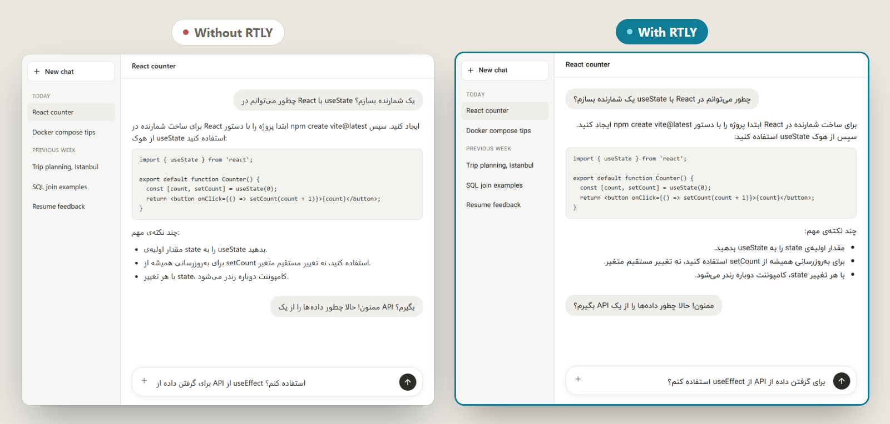
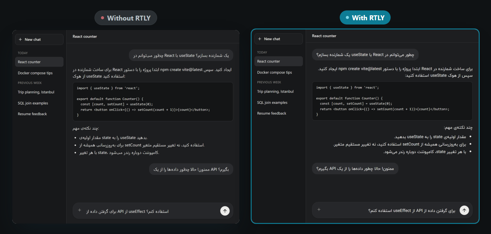

Chooses direction per message
Each block of text is checked by the letters in it. Mostly right-to-left text is aligned right. English stays on the left.
Free and open source
RTLY aligns Persian, Arabic, Hebrew and Urdu text from right to left on ChatGPT, Claude, Gemini and 13 other AI chat sites, and sets it in the IranYekan font. It runs in your browser only. No account, no tracking, no server.
Works in Chrome 111 or newer and in Edge. A Firefox build is experimental.


One job, done on the page itself, with the smallest set of permissions that makes it possible.
Each block of text is checked by the letters in it. Mostly right-to-left text is aligned right. English stays on the left.
The bundled IranYekan font is used only on text that contains Arabic-script characters, so English keeps the site's font.
Code blocks, icons, menus and sidebars are not flipped. The message box follows the language of each line you type.
No server, no analytics, no remote code. Settings stay in your browser. See the privacy policy.
RTLY runs only on these sites and does nothing anywhere else. Details and addresses are in Supported sites.
The most useful pages. The full list is in All guides.
Install RTLY and see a Persian answer line up from right to left. About five minutes.
Read →How RTLY decides a block is right-to-left, what the three modes do, and what it leaves alone.
Read →Switch a site on or off, change its mode and the text size.
Read →Live preview, interface language, color palette and the sites table.
Read →The 16 AI chat sites RTLY works on.
Read →What RTLY cannot do and what has not been tested.
Read →RTLY is a small project by one person.
The full list is on Limits and known problems.